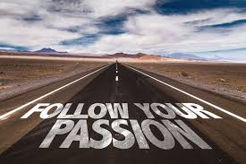
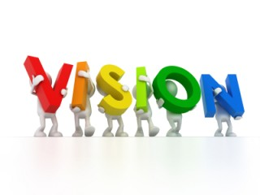

My portfolio is not only about showing who am I, but also about describing what drives me and pushes me to
to want integrate the world of technology.
The beauty of technology
In life we have different ways of expressing ourselves and in those still some people
stay calm and an expressive
, they are called the introvert, some other choose to shout loud and
and get heard; they are called the extrovert, the last part which is very interesting
in the mix
of the two and they are the called the ambivert.
But me I don`t know how to call myself because I choose to
express myself through technology by making
this world better than it was before.

I`m very passionate about something which can change the fate of the humanity,
to cut it short I`m passionate about about making a foot
print in the heart of the human being,
you may say that there is no need of it as even the humanity
have lost faith in itself, what I can reply
on that is the fact that I vehemently believe in the deep
goodness of the human being!.

The vision I have is to make sure that I`m learning a lot and sufficient, and on that I will be learning with
the best of the best, when I`m saying so I reffer directly to Andela, me I define Andela as a place where you can
touch and change the world through technology, and as you will see it later, I have already started
my journey!.
.jpg)
The is a great and famous qoutes I like which goes like:"People who think that
there are crazy enough to change the world are the ones who do so" by Steve Jobs;
I like to have that feeling of being helpful and important in the community,
because I feel like I really have a mission on this earth, that when I know the second important
day in my life, which is why I was born. And if I cannot do so,
at least I got that feeling of making something great, and I know that with the right people by my side it is possible.